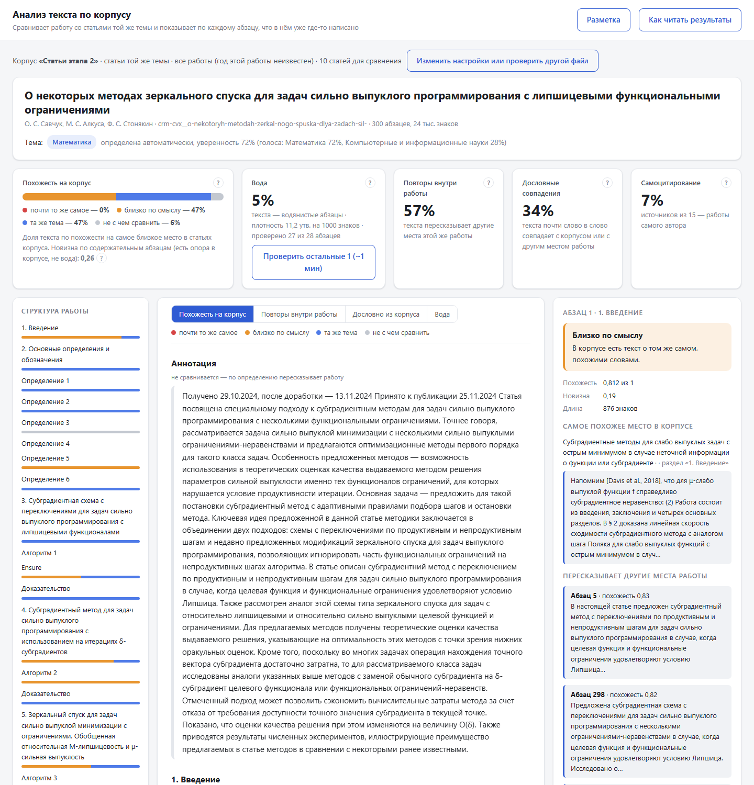
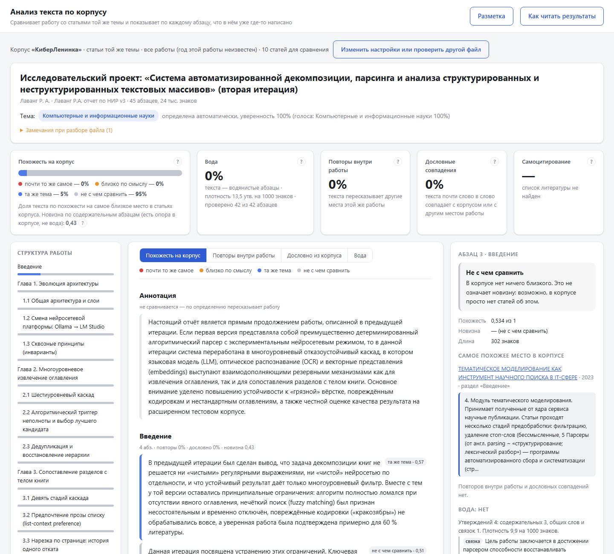
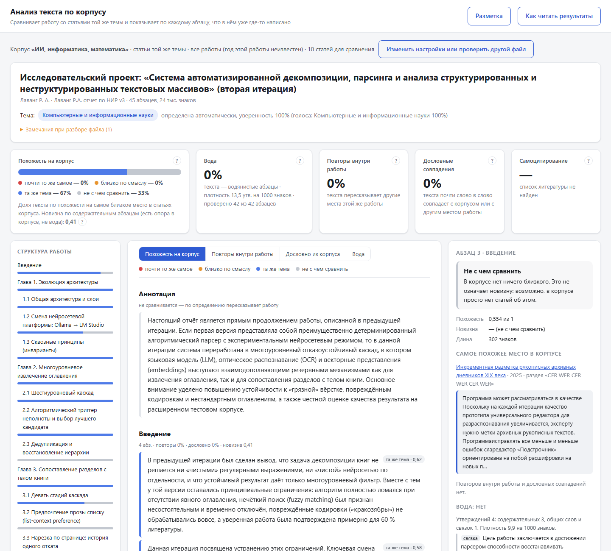
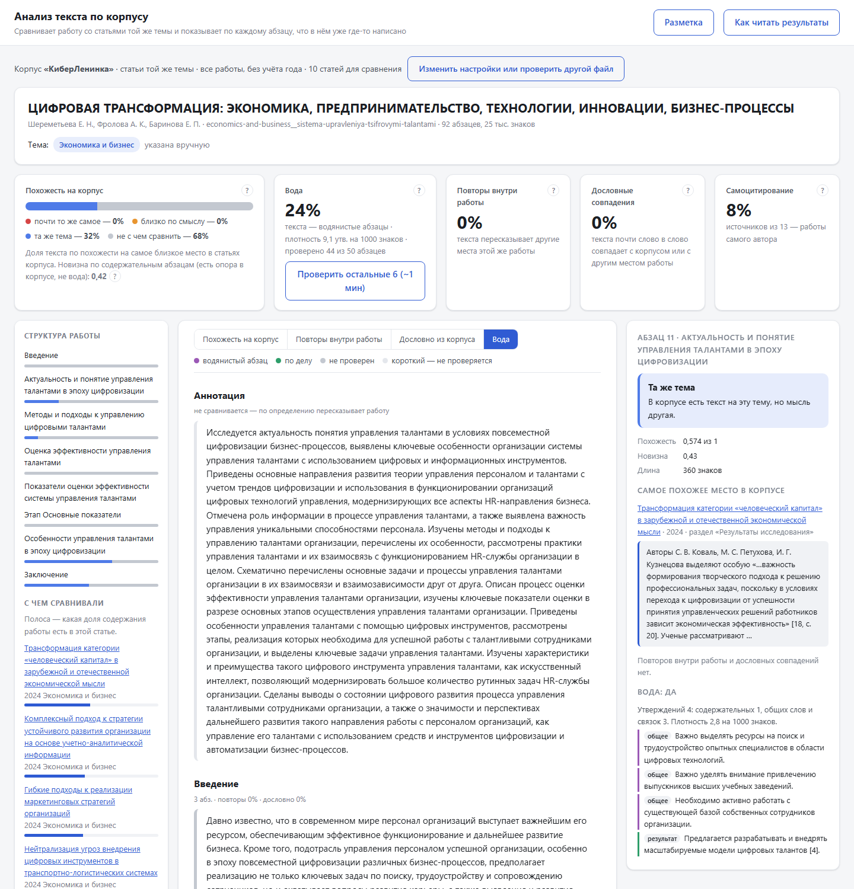
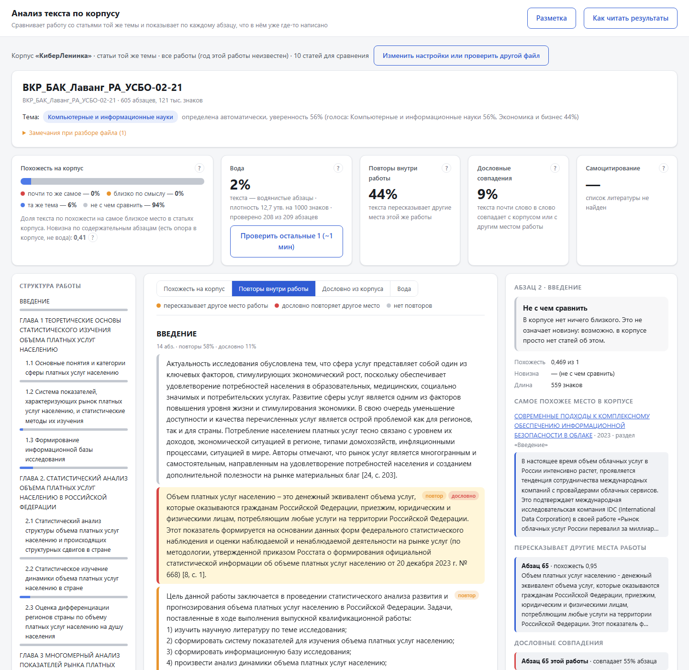

Ветка semantic-analysis, сессии 014–025 (октябрь 2026). Документ описывает всё, что построено поверх
парсера книг (этап 1): разбор одиночных статей и студенческих работ, корпуса, метрики похожести, новизны, повторов и «воды»,
веб-сервис, разметку и калибровку. Метки происхождения решений: user — решение пользователя,
данные — порог выведен из измерений, вывод — инженерное решение.
Задача этапа — по загруженной работе (статья, курсовая, отчёт, ВКР) показать по каждому абзацу: есть ли похожий по смыслу текст в корпусе и какой именно, пересказывает ли автор сам себя, есть ли дословные совпадения, много ли «воды»; и сводки по разделам и работе целиком.
| Решение | Происхождение |
|---|---|
| Только русский язык; только локальные модели (LM Studio, GPU 12 ГБ) | user |
| Детекция «сгенерировано ИИ» — не цель; стилистические сигналы («вода», повторы) — нужны | user |
| Статьи загружаются поодиночке, без отдельной архитектуры под сборник | user |
| Новизна — два числа (покрытие эталона и «сверх эталона»), эталон — открытый вопрос (§17) | user |
| Корпуса — именованные; сравнение — внутри темы работы; отдельная страница сервиса | user |
| Анализ — отдельный слой после парсинга; книжный парсер этапа 1 не меняется | вывод |
| Метрики не сводятся в одно число — профиль по осям (новизна не согласуется с «водой», §11.3) | данные |
Скрипты обслуживания: fetch_cyberleninka.py (скачивание рубрик и журналов), corpus_build.py
(папка → корпус, --reparse), corpus_calibrate.py (тема и порог опоры), embed_compare.py,
llm_compare.py (сравнение моделей), а также исследовательские semantic_articles.py,
synthetic_check.py, claims_corpus.py, consistency_check.py.
Быстрый проход (всё, кроме «воды») занимает секунды: нужен только эмбеддер. «Вода» — отдельный медленный проход большой моделью (~5–9 с на абзац), запускается кнопкой и идёт в фоне (§9).
app/services/article_parser.py)Структура восстанавливается по вёрстке (PyMuPDF): координаты строк, кегль, жирность, курсив, капс. Моделей нет — разбор детерминирован и мгновенен. Выход — тот же формат, что у книжного парсера (XML-узлы), плюс JSON с абзацами и ролями.
Спаны PyMuPDF на одной высоте (|Δy| ≤ 2 pt) собираются в ряд. Двухколоночная страница определяется по промежутку x между колонками:
Порядок чтения: участок из разделённых рядов читается сначала левой колонкой, потом правой; ряд во всю ширину (название, широкий рисунок) разрывает участок. Серия (а не вся страница) нужна потому, что на первой странице над колонками стоят шапка и аннотация во всю ширину и «разделённый» колонтитул: по всей странице колонок было 30% рядов, строки двух колонок перемешивались (найдено разметкой пользователя, s024). данные
Шум: строка в верхних/нижних 9% страницы, повторённая на ≥2 страницах (цифры нормализуются); строка на одной высоте на ≥3 страницах; голый номер страницы. Строки тела не трогаются («О.О. ВАРЛАМОВ» как автор на 1-й странице остаётся).
Новый абзац: интервал > 1,6 × обычного (с поправкой на кегль: строки названия 16 pt стоят реже), отступ первой строки относительно соседних (висячий отступ списка абзацы не дробит), короткая строка с точкой, смена кегля/стиля/письменности, «таблица/текст», слово-якорь («Аннотация», «Ключевые слова», «Список литературы»), строка оглавления с отточием («ЗАКЛЮЧЕНИЕ ....... 82» — всегда конец абзаца, иначе следующая страница «ВВЕДЕНИЕ» прилипала к оглавлению, s021). Переносы склеиваются: в конце строки и внутри строки («конфигу- рация» → «конфигурация», s024).
Отдельная строка жирным, крупнее или капсом, правдоподобная (не подпись, не пункт списка, не формула, не жирное предложение), за которой ≥ 100 знаков текста; либо заголовок в начале абзаца (жирный/курсивный фрагмент с точкой, слово из словаря «Введение.», «Выводы.»). Уровень — по нумерации «1.2.3».
Журнальная выгрузка часто содержит хвост предыдущей и начало следующей статьи: следующая статья — ещё одна связка «авторы + НАЗВАНИЕ» (КАПС или крупнее основного), выбирается статья, чьё название совпадает с именем файла. Пункты списков («1) …», «– …») после вводной фразы «…:» присоединяются к абзацу-вводу (s021).
needs_ocr (OCR для статей не сделан).Эффект правок парсера на корпусах (оборванные переносы «слово- Чужое», признак перемешанных колонок):
5522 → 2914 после исправления колонок; 322 документа пересобраны (corpus_build --reparse).
Формат «Доклады АМАН» (аннотация после литературы) вернул в анализ 14 из 15 ложно «английских» статей.
app/services/article_docx.py)В DOCX структура размечена стилями — вёрстка не нужна. Заголовки — стили «Heading N»/«Заголовок N» (уровень N); если стилей нет — короткий целиком жирный абзац без точки. До первого заголовка — титул (название — первый жирный/центрированный абзац, авторы — «И.О. Фамилия»). Зоны по заголовкам: «Содержание» (пропуск), «Реферат/Аннотация», «Список источников» (литература), «Приложение» (пропуск). Подписи «Рисунок N», заглушки «[ … ]», короткие центрированные строки — не текст; пункты списка присоединяются к абзацу-вводу; таблицы пропускаются. Выход — тот же формат, что у PDF.
app/analysis/corpus.py)label)
или предсказание (auto) по k = 7 ближайшим размеченным документам всех корпусов (области — общий словарь)./article/c/<рубрика>/<N>, новые статьи — на дальних страницах),
журналы (issues: [...] в странице журнала + /api/issue/<id>/articles), ручные папки (PDF/DOCX).app/analysis/semantic.py)Фрагмент — единица смыслового сравнения, 300–1500 знаков: короткие абзацы раздела склеиваются до ≥ 300,
длинные режутся по предложениям до ≤ 1500 (короткий абзац даёт шумный вектор, длинный — размытый). Фрагмент помнит номера
абзацев (paras): метрики считаются по фрагментам, показываются по абзацам.
Формульные фрагменты исключаются из всех метрик (0,70 — 5-й перцентиль по 430 фрагментам; ниже — формулы, таблицы, код).
v(x) — вектор модели text-embedding-qwen3-embedding-0.6b (LM Studio, контекст 8192 user).
Кэш на диске по sha1(модель + текст): повторные прогоны мгновенны.
Обозначения: работа D — множество её фрагментов без формульных; документ корпуса B — множество его фрагментов; N(D) — документы для сравнения (соседи); a — фрагмент D.
Соседи N(D): (1) режим «та же тема» — документы с той же областью наук, «самые близкие» — без учёта темы, «весь корпус»; (2) фильтр по году — по умолчанию выключен user, опция «вышедшими не позже работы»; (3) 40 лучших по cos(centroid(D), centroid(B)); (4) 10 лучших из них по cov(D → B).
| Категория | Условие | Смысл |
|---|---|---|
| почти то же самое | sim ≥ 0,85 | та же мысль, часто пересказ |
| близко по смыслу | 0,75 ≤ sim < 0,85 | о том же, похожими словами |
| та же тема | 0,56 ≤ sim < 0,75 | текст на эту тему есть, мысль другая |
| не с чем сравнить | sim < 0,56 | ближайшее не отличить от текста чужой области; не новизна |
Абзац получает значения своего фрагмента (короткие абзацы оцениваются вместе с соседями — помечается). Сводка по разделу/работе — доля текста (по знакам) в каждой категории.
Почему так: в исходном определении (nov = 1 − max cos ко всему корпусу) новизна статьи коррелировала со сходством с ближайшей статьёй ρ = −0,92 (36 статей) — «новыми» были просто одинокие в корпусе статьи; и не была связана с водой (ρ = 0,03 по 554 абзацам): водянистый абзац на редкую тему выглядел новым. Поэтому — опора и исключение воды данные.
τ = 0,82 — верх ~1% распределения несоседних пар (5251 пара: p95 = 0,70, p99 = 0,79); все пары ≥ 0,83 при чтении — пересказ.
Внутри работы и с абзацами соседей. Совпадение с аннотацией не считается повтором. Пересказ шинглы не ловят — это задача §8.4.
claims.py, water.py)Эмбеддинги «воду» не видят: на синтетике водянистый абзац имел близость к теме 0,667 при медиане 0,691. Нужен уровень
смысла — утверждения. Модель qwen3.6-35b-a3b разбирает абзац на атомарные утверждения с типом:
| Тип | Что это |
|---|---|
| результат | что получено авторами (доказано, измерено, предложено) |
| факт | конкретное проверяемое знание: определение, метод, свойство, чужой результат |
| общее | оценки и общие слова без конкретики («актуально», «позволяет повысить эффективность») |
| связка | метатекст: анонс, план, «в работе рассмотрено» |
Рассуждение модели отключено закрытым блоком в шаблоне запроса к /v1/completions
(<|im_start|>assistant\n<think>\n\n</think>\n\n): переключатели LM Studio не действуют, а думающая
модель тратит весь лимит на рассуждение. Температура 0, три повтора — одинаковые ответы.
Не проза не проверяется (по разметке пользователя: все его «не могу сказать» — такие куски): подписи («б Рис. 7»), шаги алгоритма («Шаг 5.»), расшифровки формул («где Q — …», «x – …»), таблицы (цифр > 30% непробельных символов или разных слов < 55%), абзацы короче 200 знаков, формульные. На разметке: 7 из 8 «не могу сказать», 0 ложных на 32.
Результаты хранятся по sha1 текста абзаца: повторная проверка мгновенна, прерванная продолжается с места. Пока идёт проверка, эмбеддер выгружен — загрузка нового файла отклоняется с объяснением (документы корпуса открываются). Скорость: 4,7–9 с на абзац; статья 2–5 мин, ВКР ~30 мин.
| Метод | Путь | Назначение |
|---|---|---|
| GET | /api/corpora | корпуса с числом документов и темами |
| GET | /api/corpora/{name}/documents | документы корпуса |
| GET | /api/areas | области наук (размеченные) |
| POST | /api/article/analyze | загрузка PDF/DOCX + анализ (scope, area, year, time_mode, add) |
| GET | /api/corpus-document/{id} | анализ документа корпуса относительно корпуса без него |
| GET/POST | /api/water/{status,start,start-corpus,stop,profiles,pending} | фоновая проверка воды |
| GET/POST | /api/label/{items,generate,report}, /api/label | разметка |
Страница /article.html: шаги «1. С чем сравнивать» (корпус, режим, тема, время) → «2. Что проверяем»; итог —
пять карточек (похожесть, вода, повторы, дословные, самоцитирование) с подписями «что это значит»; структура работы с
полосами по разделам; текст с подсветкой по выбранной оси; карточка абзаца с вердиктом простыми словами, ближайшей цитатой
корпуса, повторами и утверждениями; справка «Как читать результаты». Ссылки вида ?corpus=&doc=¶=&mode=.





labels.py, /label.html)Наборы фиксируются в БД один раз (ответы разных людей сопоставимы): 48 пар фрагментов (корзины близости 0,70–0,95 + повторы внутри статьи; вопрос «та же мысль / та же тема / разное») и 40 абзацев (вопрос «вода / смешано / по делу»). Ответ модели скрыт. Разметка пар отложена пользователем (тяжело и долго); воду разметил пользователь.
| Ответ человека | Абзацев | Доля общих у модели (медиана) | Модель: «вода» |
|---|---|---|---|
| вода | 2 | 0,35 | 1 (второй — перемешанные колонки) |
| смешано | 15 | 0,14 | 1 |
| по делу | 15 | 0,00 | 1 |
| не могу сказать | 8 | 0,00 | 0 — все 8 не проза (→ фильтр §9) |
Направление согласовано (у «воды» доля общих выше); у человека три уровня, у модели два. Порог оставлен user.
corpus_calibrate.py, 120 статей, 7 областей)| Лучшая близость фрагмента к… | p10 | медиана | p90 |
|---|---|---|---|
| статьям своей области | 0,438 | 0,529 | 0,635 |
| статьям чужих областей | 0,414 | 0,486 | 0,562 |
θопора = 0,56 ≈ p90 «чужих»: ниже совпадение не отличить от текста на постороннюю тему. Тема leave-one-out: 90/120 = 75%, ошибки — междисциплинарные статьи («цифровая логистика» → ИТ).
| Константа | Значение | Где | Как получено |
|---|---|---|---|
| CHUNK_MIN / MAX | 300 / 1500 знаков | semantic | компромисс шум/размытость вывод |
| FORMULA_LETTER_SHARE | 0,70 | semantic | p5 доли букв по 430 фрагментам данные |
| REDUNDANT_SIM | 0,82 | semantic | p99 = 0,79 несоседних пар; ≥0,83 — пересказ данные |
| SUPPORT_SIM | 0,56 | article_report | p90 близости к чужим областям данные |
| Категории похожести | 0,75 / 0,85 | страница | «та же мысль» между статьями ~0,76–0,84 (мивары) данные, не проверено разметкой |
| NEIGHBOURS / PREFILTER / AREA_K | 10 / 40 / 7 | corpus | вывод |
| SHINGLE_N / STEM_LEN / REUSE | 5 / 6 / 0,3 | lexical | вывод, проверено на синтетике |
| WATERY_GENERAL_SHARE | 0,5 | water | s018; оставлено после разметки user |
| MIN_PARA (вода) | 200 знаков | water | короче — подписи и обрывки вывод |
| TABLE_DIGIT_SHARE / UNIQUE | 0,30 / 0,55 | water | по разметке «не могу сказать» данные |
| MIN_BODY (корпус) | 2500 знаков | corpus_build | user |
| COLUMN_ROW_SHARE / MIN_ROWS / RUN_GAP | 0,4 / 8 / 3 | article_parser | случайный пробел в одной колонке — 10–20% рядов данные |
| Контекст эмбеддера | 8192 | LM Studio | user; 2048 обрезал длинные аннотации |
embed_compare.py, 120 статей × ≤15 фрагментов)| Модель | Тема LOO | AUC своя/чужая | Пересказ (ранг) | Время | Видеопамять |
|---|---|---|---|---|---|
| qwen3-embedding-0.6b (используется) | 78% | 0,659 | 1 | 27 с | ~3,6 ГБ |
| qwen3-embedding-4b | 77% | 0,660 | 1 | 68 с | ~5,6 ГБ |
| bge-m3 | 76% | 0,633 | 1 | 18 с | меньше |
| nomic-embed-text-v1.5 | 61% | 0,461 | 12 | 13 с | — |
Крупнее — не лучше: потолок задаёт постановка (тема ≠ мысль) и корпус, а не модель.
llm_compare.py, 30 вызовов)| qwen3.6-35b-a3b (используется) | qwen3.8-27b | |
|---|---|---|
| Тип | MoE, 3 млрд активных | плотная 27 млрд |
| Видеопамять | 8,0 ГБ (65%) | 10,6 ГБ (87%) при --gpu 0.5 |
| Скорость | 36,5 ток/с, 5,9 с/абзац | 11,5 ток/с, 17,4 с/абзац |
| «Вода» (синтетика) | плотность 1,40 | плотность 1,40 |
| Пересказ абзаца | дробит (9 утв. вместо 5) | согласованно (5) |
Qwen3.8 требует движок LM Studio ≥ 2.60 (слой MTP). MTP-спекуляция не ускоряет.
| Модуль | Ключевые функции |
|---|---|
| services/article_parser.py | extract_lines, _find_gutter, _column_order, _repair_text, mark_noise, build_paragraphs, _plausible_heading, split_articles, assign_zones, parse_article_pdf, to_xml_nodes |
| services/article_docx.py | parse_article_docx |
| analysis/semantic.py | Embedder.embed, make_chunks, is_formula, coverage, novelty, redundant_pairs |
| analysis/lexical.py | stems, shingles, body_units, find_reuse, reused_share, self_citation_share |
| analysis/corpus.py | CorpusStore: corpus_id, corpora, documents, add_document, index, predict_area, neighbours |
| analysis/article_report.py | analyze_article |
| analysis/claims.py | ClaimsLLM.complete, extract_claims, claim_profile, match_claims |
| analysis/water.py | not_prose, eligible, profile, lookup, WaterJob.start/stop/_run, _keep_awake, _lms |
| analysis/labels.py | generate, items, save, report |
| article_api.py | маршруты §10 |
| Сценарий | Цепочка | Модели | Время |
|---|---|---|---|
| Новая статья PDF | parse_article_pdf → analyze_article | эмбеддер | 5–30 с |
| Курсовая/отчёт DOCX | parse_article_docx → analyze_article | эмбеддер | 5–30 с |
| Документ из корпуса | analyze_article (exclude = сам документ) | — (кэш) | <1 с |
| Проверка на воду | WaterJob → extract_claims → para_claims | qwen3.6 (эмбеддер выгружен) | статья 2–5 мин, ВКР ~30 мин |
| Пополнение корпуса | fetch_cyberleninka → corpus_build | эмбеддер | ~1 с/статья + скачивание |
| После правок парсера | corpus_build --reparse | эмбеддер (новые тексты) | минуты |
| Сессия | Что сделано |
|---|---|
| 014 | Парсер одиночной статьи без оглавления; лексический слой (шинглы, самоцитирование) |
| 015 | Старые журналы (по названию рядом с авторами); смысловой слой (эмбеддинги, новизна, повторы) |
| 016 | +20 статей КИМ, язык статьи, синтетическая проверка, отчёт-дашборд |
| 017 | Методика с формулами; уровень утверждений на qwen3.6 (рассуждение отключено) |
| 018 | Утверждения по половине корпуса: вода — в отдельных абзацах |
| 019 | Проверка на противоречия: новизна ≈ одиночество, не связана с водой |
| 020 | Сервис: именованные корпуса (SQLite), тема, анализ по абзацам; 145 статей КиберЛенинки; колонки |
| 021 | Редизайн страницы; DOCX; ВКР и отчёт о НИР; оглавления и списки |
| 022 | Сравнение эмбеддеров и LLM; Qwen3.8 после обновления LM Studio |
| 023 | Вода в сервисе (фоновая задача); корпус ИИ/информатика/математика; страница разметки |
| 024 | Разметка воды пользователем; колонки под шапкой; не-проза; повторный разбор корпусов |
| 025 | Новизна: фильтр по году (по умолчанию выключен); открытые вопросы |
NO_PROXY='*' для pytest и uvicorn, trust_env=False в своём коде.